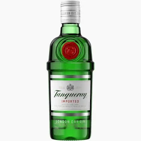

Nossos Produtos

Gin Rosa Royal
Gin artesanal com aroma floral e sabor sofisticado.

Gin Jardim Botânico
Gin com notas herbais, cítricas e botânicas.

Grey Goose
Vodka premium de sabor suave e refinado.

Vodka Cristal
Vodka elegante, ideal para drinks clássicos.

Vodka Platinum
Vodka premium com acabamento limpo e marcante.

Rum 8 Anos
Rum envelhecido com notas amadeiradas.

Rum Gold
Rum dourado de sabor intenso e encorpado.

Rum Spiced Premium
Rum especiado com aroma envolvente.

Bourbon Special
Bourbon especial com notas doces e amadeiradas.

London Dry
Gin seco clássico, perfeito para drinks tradicionais.

Royal Salute 21 Anos
Whisky sofisticado e envelhecido por 21 anos.

Single Malt 12 Anos
Whisky single malt de sabor equilibrado.

Tanqueray
Gin clássico reconhecido mundialmente.